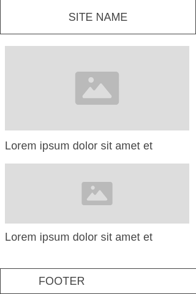
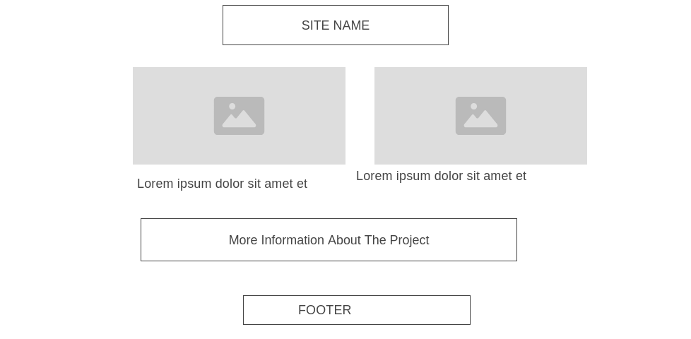

Site Name: Eco-Friendly Travel Guide
Site Purpose:
The purpose of the Eco-Friendly Travel Guide website is to educate, assist, and inspire travelers who want to reduce their environmental impact while exploring the world. The site will provide: Sustainable travel tips and best practices Guides for eco-friendly destinations Transportation recommendations with low carbon impact Packing suggestions for sustainable gear Articles that highlight responsible tourism Resources for planning environmentally conscious trips
Scenarios
Which destinations are known for being environmentally sustainable and tourist-friendly?
How can I reduce my carbon footprint while traveling long distances?
What eco-friendly travel gear should I pack for my next trip?
Color Schema
Forest Green (#2E5939) – Used for headings, navigation, and key accents to represent nature and sustainability.
Soft Earth Beige (#F3EED9) – Used for background sections and body areas to create a warm, natural look.
Sky Blue (#7BCFF2) – Used as an accent color for buttons, links, and highlight areas to convey clarity and openness.
Typography
Lora – Used for headings to create a warm, organic feel.
Open Sans – Used for all body text due to its readability on all screen sizes.
Source Code Pro – Used sparingly for small highlighted notes or travel tips.
Mobile view

Desktop view
